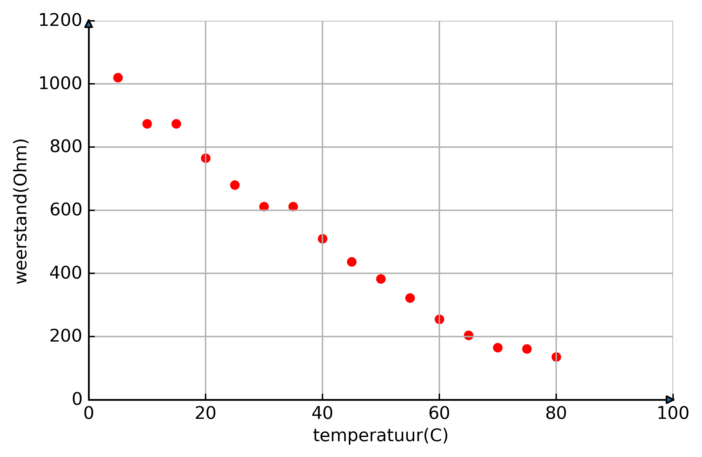
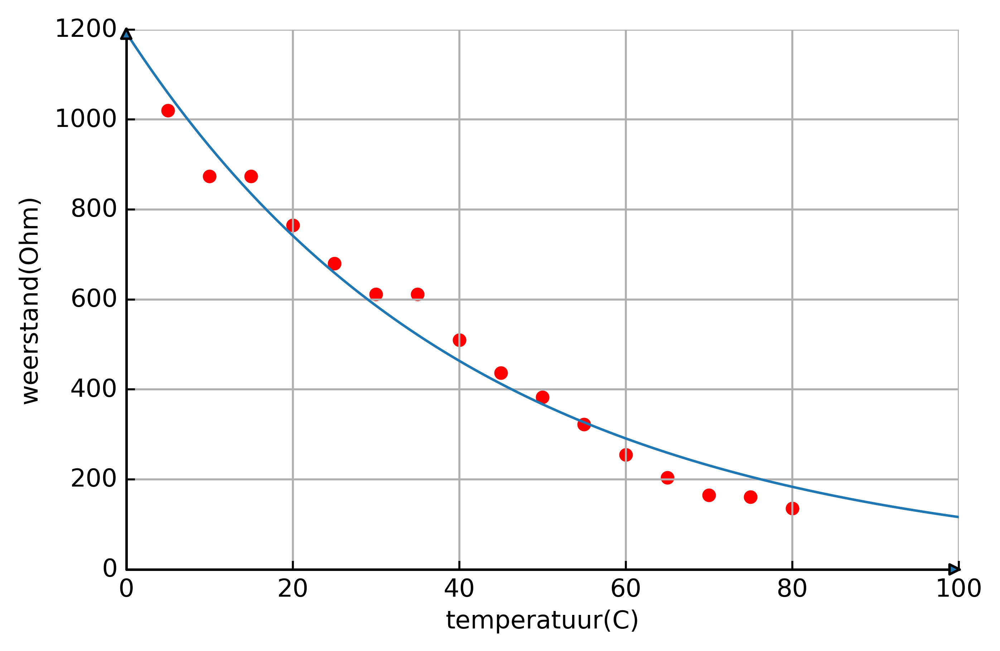
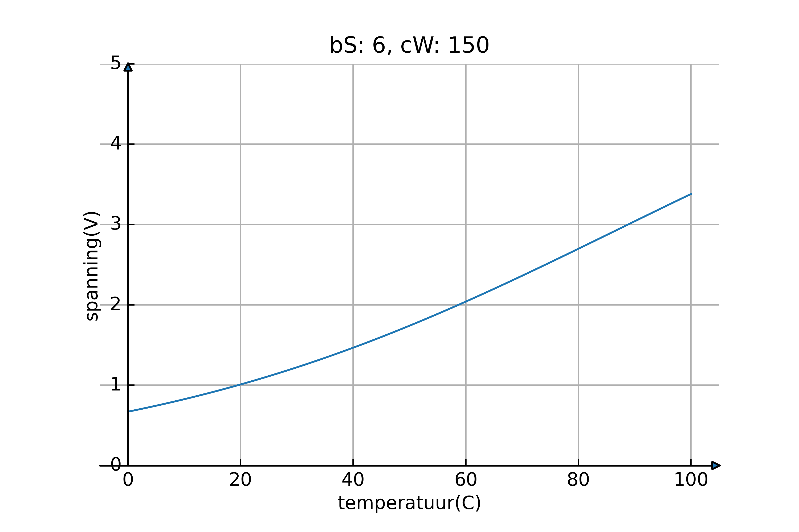
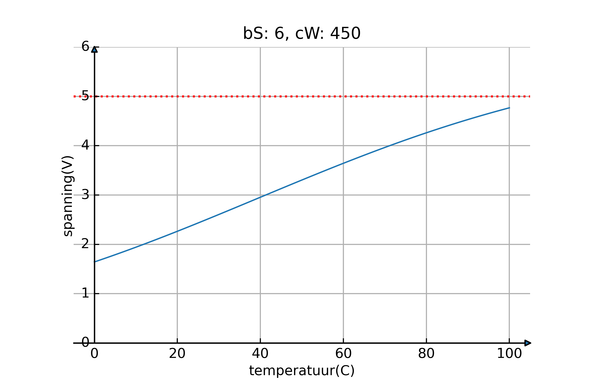
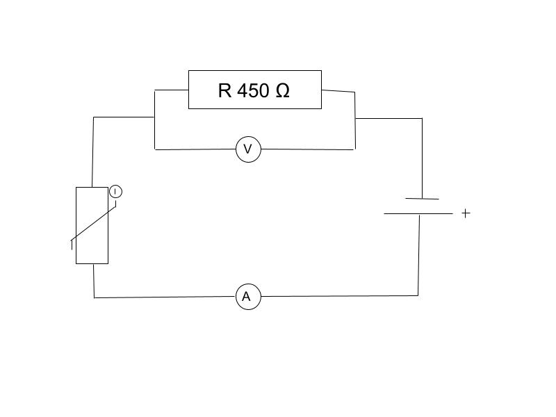
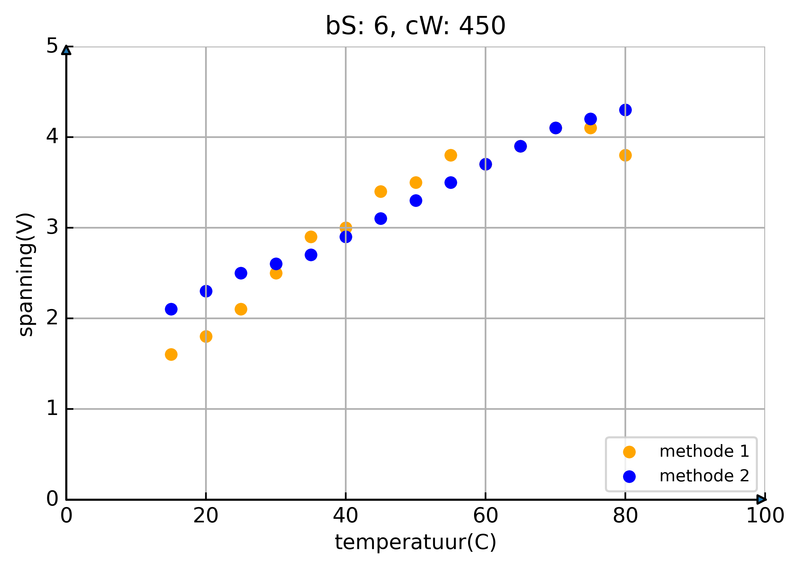
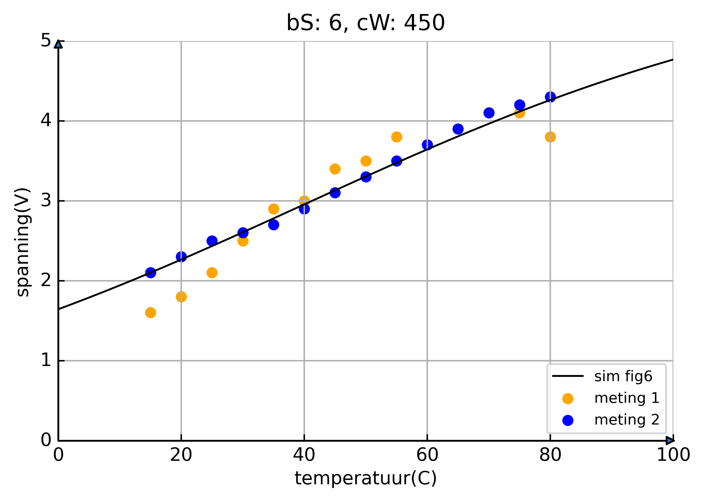

Inhoud
Inleiding en Theorie
In deze practicumopdracht gaan we een elektronische temperatuursensor bouwen die zo nauwkeurig mogelijk is in het bereik van 10 tot 80 graden Celsius.
Een sensor is een instrument dat een natuurkundige grootheid, zoals temperatuur, druk of geluidsniveau, omzet in elektrische spanning. De grafiek van de sensorspanning tegenover de temperatuur wordt de ijkgrafiek van de sensor genoemd. Een NTC is een temperatuursensor waarbij een hoge temperatuur een lage weerstand heeft en bij een lagere temperatuur een hoge weerstand. Het verband tussen de temperatuur van een NTC en de spanning is vaak niet-lineair, wat onhandig is wanneer je de NTC wilt gebruiken voor bijvoorbeeld het maken van een nauwkeurige temperatuur sensor.
Om dit probleem aan te pakken, zetten we de NTC in serie met een constante weerstand en meten we vervolgens de spanning over deze weerstand. Als we dan de juiste weerstand hebben, kunnen we een verband krijgen dat bijna helemaal lineair is.
We beginnen dit practicum met het bepalen van de ijkgrafiek van onze NTC, zodat we later kunnen simuleren hoe de waardes veranderen wanneer de bronspanning verandert en wanneer er een weerstand in serie is geschakeld met de NTC. Na de simulatie kunnen we bepalen wat de ideale waarden zijn voor de constante weerstand en de bronspanning.
Ontwerp eisen aan de Sensor
Nauwkeurigheid: De sensor moet zeer nauwkeurig werken in het temperatuurbereik van 10 tot 80 graden Celsius. We willen een lineair verband tussen de temperatuur van de NTC en de spanning over de constante weerstand, zodat we de sensor nauwkeurig en betrouwbaar is.
Gevoeligheid: De sensor moet een hoge gevoeligheid hebben. Dit betekent dat zelfs kleine temperatuurstijgingen een significante verandering in de spanning moeten veroorzaken, waardoor de sensor gemakkelijk af te lezen is. We moeten er echter voor zorgen dat de gevoeligheid niet te hoog is, want de spanning over de constante weerstand mag niet hoger zijn dan 5 volt.
NTC-karakteristiek bepalen
Materialen:
- NTC
- heet water
- koud water
- ijsblokje
- ampèremeter
- voltmeter
- spanningsbron
- thermometer
- schakeldraden
- bekerglas
- waterkoker
Methode:
Eerst wordt er een schakeling zoals weergegeven in figuur 1 gemaakt. Vervolgens wordt de NTC in een bakje met kokend water geplaatst. Een vaste spanning wordt door de NTC geleid met een bronspanning van 6 volt. Zodra het water een temperatuur van 80 graden bereikt, wordt telkens wanneer de temperatuur met 5 graden daalt, de hoeveelheid ampère en volt genoteerd in een tabel. Rond kamertemperatuur zal de temperatuur van het water zeer langzaam of helemaal niet verder dalen. Wanneer dit gebeurt, worden er ijsblokjes aan het water toegevoegd en wordt bijna al het water weggegoten. Dit stelt het water in staat om verder af te koelen tot een minimum van 5 graden, wat ons laatste meetpunt was.
Figuur 1: Meetopstelling voor bepalen van NTC-karakteristiek
Resultaten: Tabel Meting NTC karakteristiek
| Temperatuur in graden Celsius (°C) | Stroomsterkte in Ampère (A) | Weerstand in Ohm (Ω) |
|---|---|---|
| 80 | 0.045 | 136.00 |
| 75 | 0.038 | 161.05 |
| 70 | 0.037 | 165.41 |
| 65 | 0.030 | 204.00 |
| 60 | 0.024 | 255.00 |
| 55 | 0.019 | 322.11 |
| 50 | 0.016 | 382.50 |
| 45 | 0.014 | 437.14 |
| 40 | 0.012 | 510.00 |
| 35 | 0.010 | 612.00 |
| 30 | 0.010 | 612.00 |
| 25 | 0.0090 | 680.00 |
| 20 | 0.0080 | 765.00 |
| 15 | 0.0070 | 874.29 |
| 10 | 0.0070 | 874.29 |
| 5 | 0.0060 | 1020.00 |
Figuur 2: Meetopstelling voor bepalen van NTC-karakteristiek
Figuur 3: Grafiek van de metingen uit figuur 2 die van het verband tussen de weerstand en temperatuur van de NTC weergeven
Ontwerp van de sensor
Formules
Om de optimale constante weerstand en bronspanning te kunnen bepalen, hebben wij een paar formules omgeschreven en samen gevoegd, deze zijn geïntegreerd in de stappen 1 tot 4:
stap 1:Om te beginnen bij stap 1, geldt in een serieschakeling dat de totale spanning gelijk is aan
de
bronspanning.
Met behulp van de formule ohm
kan de formule
in stap 2 worden afgeleid. Vervolgens kan deze
formule
worden herschreven als
. In stap 3 is deze herschreven formule gecombineerd
met
de formule
. In stap 4 herschreven we de formule tot
Methode
R - T Grafiek
Voor het testen van de optimale waarden is een simulatie opgezet. Om een simulatie te
creëren,
werd een formule gebruikt om de weerstand van de NTC te bepalen op basis van de
temperatuur.
Het
verband tussen de NTC en de weerstand kan goed worden gemodelleerd met een exponentiële
formule:
weerstandNTC = a * (temperatuurNTC - b) ** c . In
deze
formule
zijn a, b
en c parameters die afhangen van de specifieke eigenschappen van de NTC. De parameters
worden
berekend met behulp van Python en de curve_fit-functie van
de
SciPy-bibliotheek. In dit PO zijn alle python scripts gemaakt en gerunt in Spyder in Anaconda. De code is te zien in figuur
4.
import numpy as np
from scipy.optimize import curve_fit
# Gegeven metingen
temperatuur = np.array([80, 75, 70, 65, 60, 55, 50, 45, 40, 35, 30, 25, 20, 15, 10, 5])
weerstand = np.array([136, 161.05, 165.41, 204, 255, 322.11, 382.5, 437.14, 510, 612, 612, 680, 765, 874.29, 874.29, 1020])
# Definitie van de formule
def formule(temperatuur, a, b, c):
return a * (temperatuur - b) ** c
# Curve fit uitvoeren om a, b en c te berekenen
popt, pcov = curve_fit(formule, temperatuur, weerstand, maxfev=10000000)
# Uitpakken van de optimale waarden
a_opt, b_opt, c_opt = popt
# Afdrukken van de resultaten
print("Optimale waarden:")
print("a =", a_opt)
print("b =", b_opt)
print("c =", c_opt)Figuur 4: Script om optimale waarden voor de R - T Grafiek berekenen.
De optimale coëficiënten zijn:
a = 4.28105730763011 * 10 ^ {159}
b = -1989.129549693168
c = -47.460116214251336Deze waardes werden in de formule gebruikt en er werd een grafiek van geplot. Deze grafiek is te zien in figuur 5.
Figuur 5: Grafiek van de metingen uit figuur 2 die van het verband tussen de weerstand en temperatuur van de NTC weergeven. Met een blauwe lijn die in figuur 4 is gemaakt.
Simulatie
Er werd een lijst opgesteld met temperaturen variërend van 0 tot en met 100 graden. Vervolgens werd de weerstand van de NTC berekend met behulp van de eerder berekende coëfficiënten. Met behulp van de wet van Ohm (U = I * R) werd de spanning over de weerstand berekend, waarbij de stroomsterkte werd gemeten. Met andere woorden, de gemeten spanning is gelijk aan de stroomsterkte vermenigvuldigd met de constante weerstand. Daarna werd de grafiek geplot. De code hiervoor is te zien in figuur 6.
from mpl_toolkits.axisartist.axislines import SubplotZero
import numpy as np
import matplotlib.pyplot as plt
def run(bronSpanning, constanteWeerstand): # volt, Ohm
# Coëfficiënten voor de NTC-weerstand
a = 4.28105730763011 * 10 ** 159
b = -1989.129549693168
c = -47.460116214251336
# Bereken de weerstand van NTC bij temperaturen van 0 tot en met 100
temperatuurNTC = np.arange(0, 101, 1) # Celcius
weerstandNTC = a * (temperatuurNTC - b) ** c # ohm
# Bereken de stroomsterkte en gemeten spanning
stroomsterkte = bronSpanning / (weerstandNTC + constanteWeerstand)
meetSpanning = stroomsterkte * constanteWeerstand
# Maak een figuur met een assenstelsel
fig = plt.figure(dpi = 500)
ax = SubplotZero(fig, 111)
fig.add_subplot(ax)
# instelling voor het assestelsel
ax.grid()
ax.set_title(f"bS: {bronSpanning}, cW: {constanteWeerstand}")
ax.set_xlabel("temperatuur(C)")
ax.set_ylabel("spanning(V)")
ax.set_ylim(0, 5)
ax.plot(temperatuurNTC, meetSpanning, linewidth=1)
for direction in ["xzero", "yzero"]:
# maak pijlen op het einde van elke axis
ax.axis[direction].set_axisline_style("-|>")
# maak X en Y axis
ax.axis[direction].set_visible(True)
for direction in ["left", "right", "bottom", "top"]:
# verwijder de rand
ax.axis[direction].set_visible(False)
plt.show()
# Test waarden voor bronspanning en weerstand constanteWeerstand
run(6, 150)Figuur 6: code om een grafiek te plotten waar het verband tussen de temperatuur van NTC en spanning over de constante weerstand te zien is.
Met de simulatie werd een grafiek gecreëerd die het verband tussen de spanning over de constante weerstand en de temperatuur weergeeft. Deze simulatie maakte gebruik van een bronspanning van 6V en een constante weerstand van 150Ω. In figuur 7 is de grafiek te zien.
Figuur 7: grafiek van het verband tussen de temperatuur van de NTC en de spanning van de constante weerstand.
Video maken
Om een duidelijk beeld te krijgen van hoe de U-T grafiek in figuur 7 verandert bij verschillende constante weerstanden, werd er een video gemaakt waarbij de constante weerstand geleidelijk toenam gedurende de video. Er werden eerst 151 frames gecreëerd van de U-T grafiek, waarbij een bronspanning van 6V werd gebruikt en de constante weerstand van 0Ω tot en met 1500Ω ging. In figuur 8 is te zien hoe de code uit figuur 6 is aangepast om dit te doen.
from mpl_toolkits.axisartist.axislines import SubplotZero
import numpy as np
import matplotlib.pyplot as plt
import os
def run(bronSpanning, constanteWeerstand): # volt, Ohm
#... dezelfde code als in figuur 6
#rode lijn op spanning = 5V
ax.axhline(y=5, color='r', linestyle=':')
# In plaats van het figuur laten zien slaan we het op de plot op als
# een afbeelding
filename = f"{i}.png"
plt.savefig(filename)
plt.close(fig) # Sluit het figuur om geheugen vrij te maken
# Maak een map aan om de plots op te slaan
folder_name = "cWFrames"
os.makedirs(folder_name, exist_ok=True)
i = 0
#een lijst voor alle waardens van de bronspanning
cWArray = np.arange(0,1500,10)
for cW in cWArray:
run(0, cW)
# Verplaats de opgeslagen plot naar de map
filename = f"{i}.png"
os.rename(filename, os.path.join(folder_name, filename))
i += 1figuur 8: code om de frames voor de video te maken.
Toen we de code uit figuur 8 uitvoerden, kregen we de map "cWFrames" met daarin 151
afbeeldingen. Om een video van deze afbeeldingen te maken, hebben we de
opencv-python
bibliotheek gebruikt. Dit doen we in figuur
9.
import cv2
import os
folder_path = "/Users/a144895/Library/Mobile Documents/com~apple~CloudDocs/Developer/python/natuurkundePOmodeleren/cWFrames"
output_video_path = "cWVideo.mp4"
# een gesorteerde lijst met alle frames in de map
frames = [f for f in os.listdir(folder_path) if f.endswith('.png')]
frames.sort(key=lambda x: int(''.join(filter(str.isdigit, x))))
# Krijg de afmeting van de eerste frame
first_frame_path = os.path.join(folder_path, frames[0])
first_frame = cv2.imread(first_frame_path)
height, width, _ = first_frame.shape
# Create een video writer object
fourcc = cv2.VideoWriter_fourcc(*'mp4v')
fps = 30 # Frames per seconde
output_video = cv2.VideoWriter(output_video_path, fourcc, fps, (width, height))
# Loop over elk frame en schrijf het naar de video
for frame_name in frames:
frame_path = os.path.join(folder_path, frame_name)
try:
frame = cv2.imread(frame_path)
output_video.write(frame)
except Exception as e:
print(f"Error processing frame {frame_name}: {str(e)}")
# Sluit de video writer en sluit de video
output_video.release()
cv2.destroyAllWindows()
print("Video klaar!")figuur 9 - code om van frames een video maken
figuur 10 - video van de U - T grafiek wanneer de contante weerstand veranderd (Je kan , en . gebruiken om een frame voor of achteruit te gaan)
Toen we de code in figuur 9 uitvoerden, kregen we de video zoals weergegeven in figuur 10. In deze video konden we zien dat bij een constante weerstand van 450Ω de spanning over de weerstand het meest gelijk liep. Daarom was de optimale weerstand voor deze NTC 450Ω.
Om de optimale bronspanning te bepalen, pasten we de code uit figuur 8 aan, zodat de bronspanning veranderde in plaats van de constante weerstand. De aangepaste code was te vinden in figuur 11. De bronspanning varieerde van 1V tot 10V over 181 frames. .
#... dezelfde code als in figuur 8
#een lijst voor alle waarden van de bronspanning
bSArray = np.arange(1,10,0.05)
for bS in bSArray:
run(bS, 450)
# Verplaats de opgeslagen afbeelding naar de map
filename = f"{i}.png"
os.rename(filename, os.path.join(folder_name, filename))
i += 1figuur 11 - code om de frames te maken wanneer de bronSpanning veranderd
figuur 12 - video van de U - T grafiek wanneer de bronspanning veranderd
Wanneer we de code in figuur 11 uitvoeren, krijgen we de video zoals weergegeven in figuur 12. In deze video kunnen we zien dat bij een constante weerstand de bronspanning van 6V ideaal is.
Resultaten
Na de video's in figuur 12 en 10 te hebben bekeken en vergeleken, hebben we besloten dat bij een bronspanning 6 volt en een weerstand 450 ohm de ijkgrafiek heeft het meest lineaire verband en krijgt de hoogste volt waarde bij 80 graden net onder de 5 volt. Als we de simulatie in figuur 6 runnen voor die waarden, krijgen we de grafiek in figuur 13.
Figuur 13: grafiek van het verband tussen de temperatuur van de NTC en de spanning van de constante weerstand. bij de ideaal bronspanning en constante weerstand
Testen van sensor
Materialen
- NTC
- Heet water
- Ijsblokje
- Ampèremeter
- Voltmeter
- Spanningsbron
- Thermometer
- Schakeldraden
- Bekerglas
- Waterkoker
- Weerstand
Methode
Methode 1Na de schakeling te hebben gebouwd zoals in figuur 14 geïllustreerd is, is een bekerglas gevuld met kokend water. In dit kokend water hebben wij de NTC (van de schakeling) en de thermometer gedaan. Vervolgens is bij elke temperatuurdaling van 5°C vanaf 80°C , is de ampère over de schakeling en de spanning over de ohmse weerstand gemeten. Deze metingen werden vervolgens genoteerd in een tabel. Omdat de temperatuur van het water erg langzaam daalt, is er rond de 60 graden steeds een ijsklontje bij het water toegevoegd. Hierdoor kon het water veel sneller afkoelen en kon de meting sneller verricht worden. Toen de temperatuur rond de 25 graden was zijn er erg veel ijsklontjes toegevoegd om de temperatuur verder te verlagen.
Methode 2
Na de schakeling te hebben gebouwd zoals in figuur 14 geïllustreerd is, is de ampère meter uit de schakeling verwijderd. Vervolgens is er een klein bekerglas gevuld met kokend water, hierin is de NTC(van de schakeling) en een thermometer gedaan. Deze thermometer werd vastgehouden met de onderkant op dezelfde hoogte als de NTC. Vervolgens werd de temperatuur van het water met 5 graden Celsius gedaald en werd de spanning over de Ohmse weerstand genoteerd. Omdat net zoals bij de eerste meting de temperatuur erg langzaam daalt, is een groter bekerglas gevuld met ijsklontjes en water. Hier werd gelijk na een meting het kleinere bekerglas geplaatst zodat het koude water de buitenkant van het kleinere bekerglas afkoelde. Na een paar seconden afgekoeld te zijn is het kleine bekerglas uit het grote bekerglas verwijderd en is er geroerd waardoor het verkoelende water verspreid is over het hele, kleine bekerglas. Vervolgens omdat de thermometer op dezelfde hoogte is als de NTC kon er een nauwkeurigere temperatuur worden afgelezen. Na het aflezen van de temperatuur werd de hierboven beschreven procedure herhaald tot de thermometer rond de 15 graden. Na de 15 graden zijn er direct ijsklontjes toegevoegd aan het kleine bekerglas om de temperatuur verder te verlagen.
figuur 14 schaking van testen van NTC
Resultaten
Meting 1De resultaten laten duidelijk zien dat de tweede meting aanzienlijk nauwkeuriger is dan de eerste. Tijdens de eerste metingen waren we duidelijk minder zorgvuldig in ons werk. In een poging om de temperatuur sneller te verlagen, voegden we ijsklontjes toe aan het water. Helaas resulteerde dit in een ongelijkmatige daling van de temperatuur. De bovenste laag van het water werd sneller gekoeld dan de onderste laag, waardoor er een ongewenst temperatuurverschil ontstond. Na het meten van de eerste resultaten, figuur 15 en 17, vonden wij dat wij niet nauwkeurig genoeg hadden gewerkt. Dus wij hadden besloten om een tweede meting te doen. Bovendien werd er een fout gemaakt bij het plaatsen van de thermometer. Deze stond niet op het juiste niveau en was niet correct uitgelijnd met de NTC van het meetsysteem. Deze onnauwkeurige positionering van de thermometer resulteerde in een minder precieze meting van de temperatuur.
Meting 2
De resultaten van de tweede meting waren overduidelijk beter dan die van de eerste. We pasten dezelfde methode toe als voorheen, waarbij we gebruik van ijsklontjes hebben gemaakt om de temperatuur sneller te laten dalen. Deze keer namen we extra maatregelen om de procedure gecontroleerd te maken en zelf te bepalen wanneer we wilden dat de temperatuur sneller zou afnemen. Om te voorkomen dat de temperatuur onregelmatig zou afnemen en het water op verschillende plaatsen verschillende temperaturen zou hebben, dompelen we het bekerglas regelmatig onder in een groter bakje ijswater. Door dit te doen, konden we op een gecontroleerde manier werken en de snelheid van de temperatuurdaling bepalen. Bovendien roerden we elke keer dat we het bekerglas in het ijswater dompelden, het water door. Dit zorgde ervoor dat de temperatuur gelijkmatig verdeeld werd en overal in het water hetzelfde was. Daarnaast hebben we extra aandacht besteed aan de positionering van de thermometer. We plaatsten deze precies op het niveau van de NTC in het water. Dit zorgde voor een veel nauwkeurigere meting dan bij de eerste poging. Door de thermometer op de juiste positie te plaatsen, konden we de temperatuur van het water op een veel preciezere manier aflezen. Deze resultaten komen dicht in de buurt van de simulatie, zoals te zien is in de grafiek op figuur 17.
De resultaten van beiden methodes hebben we genoteerd in figuur 15 en geplot in figuur 16
| Temperatuur (℃) | Spanning methode 2 (U) | Spanning methode 1 (U) |
|---|---|---|
| 80 | 4.30 | 3.80 |
| 75 | 4.20 | 4.10 |
| 70 | 4.10 | 4.10 |
| 65 | 3.90 | 3.90 |
| 60 | 3.70 | 3.70 |
| 55 | 3.50 | 3.80 |
| 50 | 3.30 | 3.50 |
| 45 | 3.10 | 3.40 |
| 40 | 2.90 | 3.00 |
| 35 | 2.70 | 2.90 |
| 30 | 2.60 | 2.50 |
| 25 | 2.50 | 2.10 |
| 20 | 2.30 | 1.80 |
| 15 | 2.10 | 1.60 |
Figuur 15: tabel van de NTC meting 1 & 2
Figuur 16: grafiek van de NTC meting 1 & 2
Evaluatie
Validiteit
Vergelijken van de simulatie van de ijkgrafiek en de resultaten uit de metingen.
Figuur 17: grafiek van de meetresultaten uit figuur 15 en de simulatie uit figuur 6.
Zoals in Figuur 17 te zien is, is de simulatie van de ijkgrafiek bij een bronspanning van 6V en een constante weerstand van 450Ω vrijwel identiek aan meting 2.
Betrouwbaarheid
Onze zelfgemaakte sensor heeft bewezen zeer betrouwbaar te zijn, aangezien de gemeten ijkgrafiek vrijwel identiek is aan de theoretische ijkgrafiek. Dit betekent dat de sensor consistent en accuraat werkt, en dat de gemeten resultaten nauwkeurig overeenkomen met de verwachte waarden.
Bonus: Regelsysteem temperatuur sensor
Doel
Het doel van onze schakeling is om aan te geven wanneer de temperatuur lager is dan 40°C of hoger dan 80°C. Dit doet de schakeling door een alarm af te laten gaan en een LED aan te zetten.
Ontwerp regelsysteem
Figuur 18 - De schakeling van het systeembord
Wanneer de variabele spanning hoger is dan 4,3V (80°C) gaat een LED 1 branden.
Wanneer de variabele spanning lager is dan 3,0V (40°C) gaat een LED 2 branden.
Wanneer de variabele spanning lager is dan 3,0V (40°C) of hoger is dan 4,3V (80°C) dan gaat er een timer lopen wanneer 5 (0101 binair) seconde bereikt dan geheugencel “aan” die gaat weer uit wanneer de spanning tussen de 3,0V en 4,3V is. Wanneer de geheugencel aan staat gaat er om de halve seconde (1Hz) de zoemer aan zodat je kan kijken wat er mis is en als LED 1 brandt zet je de brander lagen en als LED 2 brandt zet je de brander hoger.
Potentie
Onze schakeling kan worden gebruikt om aan te geven wanneer de temperatuur van de brander veranderd moet worden tijdens het maken van methamphetamine. Het hele proces van het maken van methamphetamine is een gevaarlijk. Daarom is het van cruciaal belang om de temperatuur zorgvuldig te controleren.
Een van de belangrijkste stappen is de reactie waarbij pseudo-efedrine wordt omgezet in methamphetamine. Deze reactie kan worden vertegenwoordigd door de volgende vereenvoudigde reactievergelijking:
Hier zie je dat pseudo-efedrine () reageert
met azijnzuur (
) en een
katalysator zwavelzuur
(
) om
methamphetamine (
) en met water (
) te vormen. Om
nevenreacties of zelfs explosies te voorkomen, wordt de temperatuur altijd onder de 80 graden
gehouden. Op deze manier vermijden we onvoorziene gebeurtenissen en kunnen we zuiverdere
methamphetamine produceren. Wanneer de temperatuur lager is dan 40 graden dan gaat het proces te
langzaam. Dus de temperatuur moet tussen de 40 en 80 graden blijven.
Website
Deze website hebben we gemaakt met .html, .css en .js in visual studio code van mircosoft. We hebben de bootstrap bibliotheek gebruikt voor de layout. We hebben de Prism bibliotheek gebruikt voor de code blokken. We gebruiken de codecorgs API om LaTeX voor formules gebruikt.
Hier kun je het hele PO downloaden inclusief de python script's, video frames en de website.